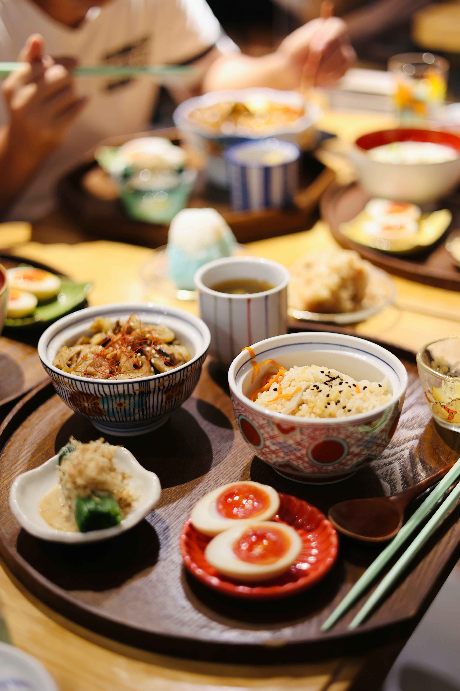

A World of Flavors
International cuisine brings together flavors from every corner of the globe. From Italian pasta and
pizza to Japanese sushi and ramen, each country offers its own signature dishes that reflect culture and
tradition. Exploring international food allows us to travel the world through taste, without ever
leaving the table.
Fusion and Creativity
One of the most exciting parts of international food is fusion cuisine, where chefs blend cooking
techniques and ingredients from different cultures. Dishes like Korean BBQ tacos or Thai-inspired pasta
show how creativity can break boundaries. Fusion food celebrates innovation while honoring culinary
traditions from around the world.

Sharing Culture Through Food
Food is a universal language that connects people across borders. Trying international dishes is more
than just eating—it is experiencing another culture’s history, values, and lifestyle. Whether it’s
French pastries, Middle Eastern kebabs, or Mexican street food, international cuisine helps us
understand and appreciate global diversity.